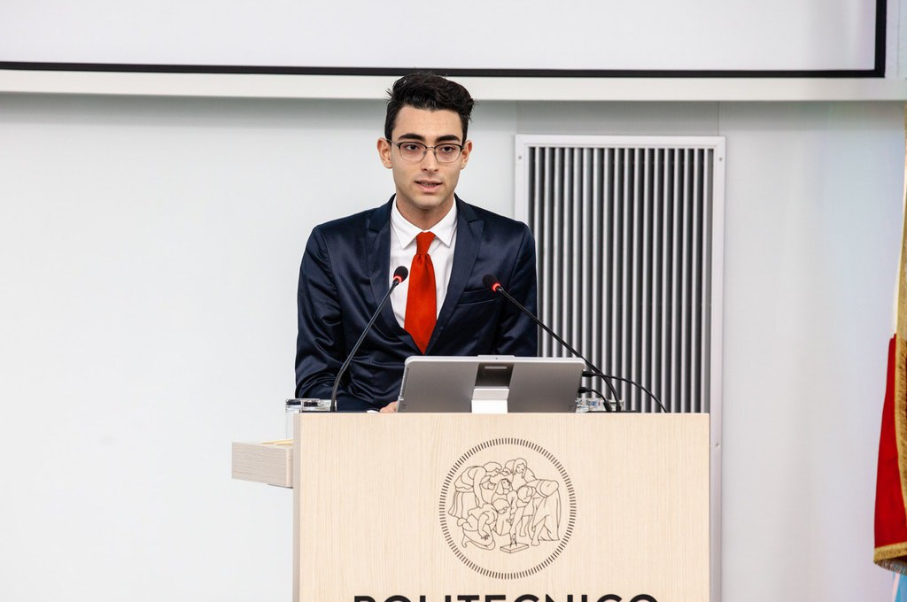
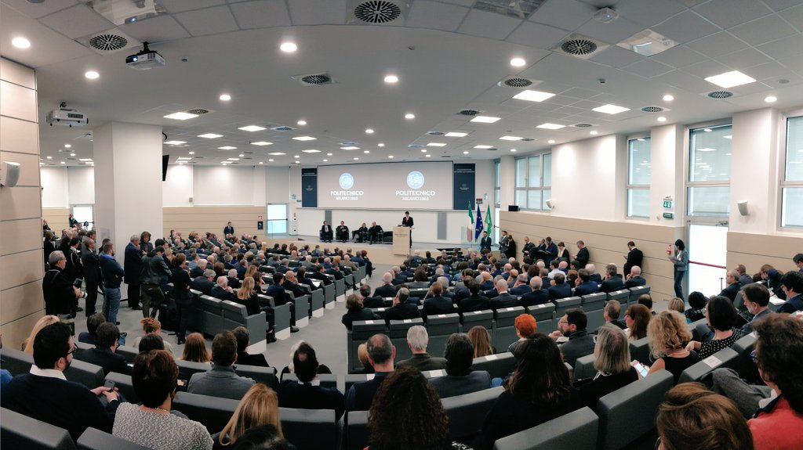

<div class="parallax">
    <div class="content">
        <div class="section sectionLeft">
            <aside>
                <h2>MERITO E DSU</h2>
                <p>Ci battiamo costantemente per merito e pari possibilità.</p>
                <h2>APARTITICITÀ E ACONFESSIONALITÀ</h2>
                <p>Slegati da ogni tipo di partito, movimento o gruppo religioso.</p>
                <h2>INTERNAZZIONALIZZAZIONE</h2>
                <p>Vediamo le esperienze internazionali come un’occasione di confronto e crescita.</p>
                <h2>PARTECIPAZIONE</h2>
                <p>Applichiamo la formula del coinvolgimento dello studente, a 360°.</p>
            </aside>

            <div class="imageHalf">
                
            </div>

        </div>
        <div class="section anim sectionRight" data-delay=".5s">
            <aside>
                <h1>LA RAPPRESENTANZA AL POLITECNICO</h1>
                <p>
                    Nasce dal confronto fra gli studenti del Politecnico di Milano: tramite le elezioni studentesche
                    ogni 2 anni vengono eletti i rappresentanti che andranno a comporre i diversi organi dell’Ateneo.
                </p>
                <div id="faq-rappr">
                    <details>
                        <summary>SENATO ACCADEMICO</summary>
                        <p>ciao</p>
                    </details>
                    <details>
                        <summary>CONSIGLIO DI AMMINISTRAZIONE</summary>
                        <p>ciaop</p>
                    </details>
                    <details>
                        <summary>GIUNTA DI SCUOLA</summary>
                        <p>ciaoao</p>
                    </details>
                    <details>
                        <summary>COMMISSIONE PARITETICA</summary>
                        <p>caa</p>
                    </details>
                    <details>
                        <summary>COMITATO UNICO SPORTIVO</summary>
                        <p>Answer 3</p>
                    </details>
                    <details>
                        <summary>COMITATO UNICO DI GARANZIA</summary>
                        <p>Answer 3</p>
                    </details>
                    <details>
                        <summary>CONSIGLIO DEL CORSO DI STUDIO</summary>
                        <p>cicc</p>
                    </details>
                </div>
            </aside>

            <div class="imageHalf">
                
            </div>
        </div>

        <div class="section anim sectionLeft" data-delay=".5s">
            <aside>
                <h1>SENATO ACCADEMICO</h1>
                <p>Il Senato Accademico è l'organo che indirizza e programma lo sviluppo dell'Ateneo, con
                    particolare riguardo alla didattica e alla ricerca, vigilando inoltre sul funzionamento
                    complessivo dell'istituzione. Il senato è composto dal Rettore, dai direttori di
                    dipartimento, dai rappresentanti eletti del personale docente, dai rappresentanti eletti del
                    personale tecnico-amministrativo e da una rappresentanza elettiva degli studenti.</p>
                <h3>Per cosa possono aiutarmi i rappresentanti in Senato?</h3>
                <p>I membri del Senato hanno una visione a 360 gradi dell’Ateneo: si confrontano inoltre con i
                    loro colleghi nelle Scuole attraverso un organo detto Consiglio degli Studenti. Possono
                    quindi portare le istanze degli studenti ai massimi livelli decisionali.</p>
            </aside>

            <div class="imageHalf">
                
            </div>
        </div>

        <div class="section anim sectionRight" data-delay=".5s">
            <aside>
                <h1>CONSIGLIO DI AMMINISTRAZIONE</h1>
                <p>Il Consiglio di Amministrazione è uno dei due Organi Centrali del Politecnico di Milano;
                    nella fattispecie, operando in coerenza con le scelte programmatiche e i criteri di
                    utilizzazione delle risorse stabiliti dal Senato Accademico, ha funzioni normative, di
                    indirizzo e di controllo della programmazione amministrativa, economica e patrimoniale di
                    lungo periodo dell'Ateneo. Degli 11 membri con diritto di voto che lo compongono, 2 sono
                    studenti: la rappresentanza di questa categoria è ritenuta molto importante
                    dall'Amministrazione del Politecnico ad ogni livello.</p>
                <h3>Per cosa possono aiutarmi i rappresentanti in CdA?</h3>
                <p>Molti sono gli ambiti discussi in quest'organo che si riflettono giornalmente nelle molte
                    opportunità messe a disposizione degli studenti: borse di studio per DSU, tesi all'estero,
                    bandi erasmus, nuove infrastrutture, partecipazioni esterne e interne, bandi di concorso, e
                    molti altri. </p>
            </aside>

            <div class="imageHalf">
                
            </div>
        </div>

        <div class="section anim sectionLeft" data-delay=".5s">
            <aside>
                <h1>GIUNTA DI SCUOLA</h1>
                <p>La Giunta di Scuola è un organo composta dal Preside, dai Direttori dei Dipartimenti
                    raccordati nella Scuola, dai Coordinatori dei Corsi di studio e da una Rappresentanza
                    elettiva degli studenti. Qui vengono discusse tematiche di ampio interesse che riguardano
                    tutti i Corsi di Studio e i Dipartimenti: linee guida sulla didattica e la ricerca,
                    didattica innovativa, modalità di esame, progetti extracurriculari e tanto altro. In Giunta
                    si discutono e si analizzano problematiche collettive, in un confronto attivo tra docenti e
                    studenti e si discutono soluzioni nuove e condivise.</p>
                <h3>Per cosa possono aiutarmi i rappresentanti in Scuola?</h3>
                <p>I rappresentanti di Scuola sono in costante contatto con i CCS, venendo loro in aiuto qualora
                    emergano problemi di difficile gestione, comuni a più corsi di studio o riguardanti
                    miglioramenti di lungo respiro sulla didattica. Di concerto con i rappresentanti dei CCS
                    segnalano sovrapposizioni negli orari e nelle sessioni d’esame. I rappresentanti in Giunta
                    si Scuola sono inoltre in contatto con i membri di Senato Accademico e CdA per lavorare di
                    concerto sulle iniziative di Ateneo.</p>
            </aside>

            <div class="imageHalf">
                
            </div>
        </div>

        <div class="section anim sectionRight" data-delay=".5s">
            <aside>
                <h1>COMMISSIONE PARITETICA</h1>
                <p>La commissione paritetica docenti-studenti è l'organo che si occupa di monitorare l'offerta
                    formativa e la qualità della didattica, con specifica attenzione alle opinioni e ai
                    risultati degli studenti. E' composta da cinque docenti e cinque studenti e ogni anno (alla
                    fine del primo semestre) compie la propria analisi, basandosi sui risultati e i dati forniti
                    dai singoli corsi di studio, voti e dati di ogni esame ma soprattutto i questionari
                    compilati dagli studenti ad ogni iscrizione di esame. Le conclusioni della commissione
                    vengono riportate a tutti i coordinatori dei Corsi di studio e al Preside di scuola:
                    costituisce quindi un potente strumento per far sentire le opinioni degli studenti sulla
                    didattica</p>
                <h3>Per cosa possono aiutarmi i rappresentanti in Commissione Paritetica? </h3>
                <p>La commissione paritetica lavora basandosi su questionari e segnalazioni ai rappresentanti:
                    il modo migliore per evidenziare problemi è rispondere in maniera completa e attenta ai
                    questionari relativi ad ogni insegnamento!</p>
            </aside>

            <div class="imageHalf">
                
            </div>
        </div>

        <div class="section anim sectionLeft" data-delay=".5s">
            <aside>
                <h1>COMITATO UNICO SPORTIVO</h1>
                <p>ccc</p>
            </aside>

            <div class="imageHalf">
                
            </div>
        </div>

        <div class="section anim sectionRight" data-delay=".5s">
            <aside>
                <h1>COMITATO UNICO DI GARANZIA</h1>
                <p>cisao</p>
            </aside>

            <div class="imageHalf">
                
            </div>
        </div>


        <div class="section anim sectionLeft" data-delay=".5s">
            <aside>
                <h1>CONSIGLIO DEL CORSO DI STUDIO</h1>
                <p>Il CCS, Consiglio di Corso di Studio, è l’organo che riunisce i docenti del Corso e un numero
                    variabile di rappresentanti degli studenti. All’interno del CCS vengono discussi i temi di
                    prettamente legati alle modalità di erogazione della didattica e alle dinamiche del Corso
                    stesso. La presenza di una rappresentanza studentesca in questo organo è fondamentale, al
                    fine di garantire una completa informazione degli studenti sulla realtà che vivono
                    quotidianamente e al fine di avere un dialogo diretto con i docenti.
                    Ogni anno, alla fine del primo semestre, il CCS compie un’autoanalisi, basandosi sui
                    risultati e i dati forniti dai singoli insegnamenti, voti, dati di ogni esame e soprattutto
                    i questionari compilati dagli studenti prima dell’iscrizione agli stessi. Le conclusioni
                    sono inviate alla Commissione Paritetica per compiere una controanalisi e, se necessario,
                    delle correzioni.
                </p>
                <h3>Per cosa possono aiutarmi i rappresentanti in CCS?</h3>
                <p>Indicazioni sugli esami, consigli su come affrontare il percorso di studi, tirocini e
                    informazioni sul tuo corso, aiuto per docenti e problemi con gli esami: per avere un
                    riscontro immediato i rappresentanti degli studenti in CCS sono il tuo primo riferimento!
                </p>
            </aside>

            <div class="imageHalf">
                
            </div>
        </div>

    </div>
</div>

<script src="/assets/js/intersection.js"></script>